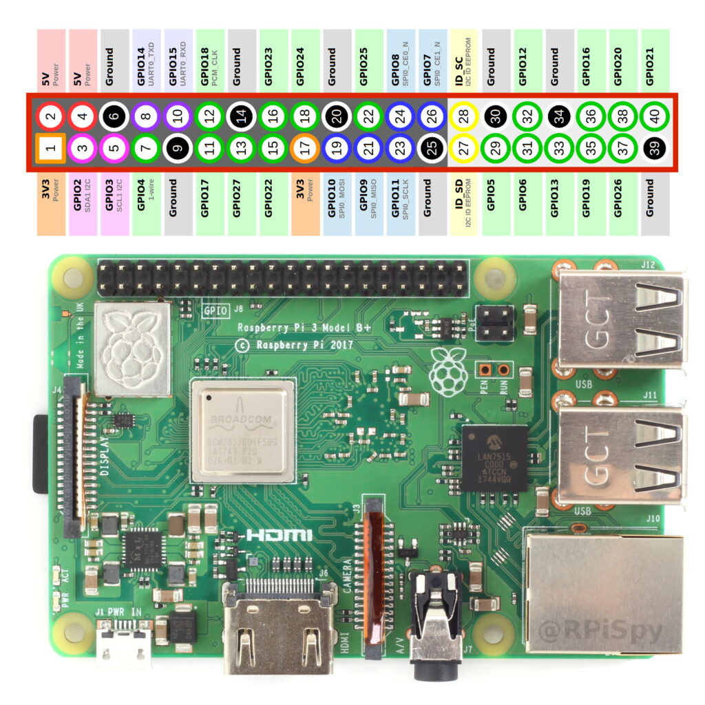
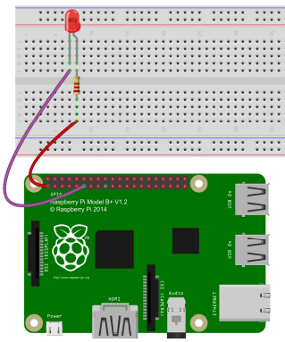

Lab08
O que vamos ver neste lab?¶
- Raspberry Pi:
- Conhecendo os pinos
- Usando a biblioteca RPI.GPIO
Conhecendo os pinos da Raspberry Pi¶
Podemos utilizar a Raspberry Pi para conectar sensores e atuadores, de forma semelhante como foi feito utilizando o Arduino, para isso utilizamos os barramento de pinos da Raspberry Pi chamado de GPIO (General Purpose Input Output). Ao todo são 40 pinos (para RPI 2 ou superior) e de forma geral cada pino possui uma função ou caracteristica especifica.
Warning
Cuidado: Devemos ter atenção para não conectar os perifericos na placa de forma incorreta. Existe risco de queimar a Raspberry Pi.
A imagem abaixo é um guia simples para cada pino. Parece complicado na primeira vez, mas é tranquilo.

Vamos conhecer o que é cada pino:
- Pinos de Alimentação:
- 3.3V (ao todo 2 pinos)
- 5V (ao todo 2 pinos)
- GND/Ground/0V (ao todo 8 pinos)
- Pinos de interface:
- GPIO (General purpose input and output): São os pinos de entrada/saida. A tensão de saida é de 3.3V.
- I2C/SPI/UART: Protocolos de comunicação especificos utilizados para realizar a interface módulos epecificos com a Raspberry Pi.
Warning
Atenção: Observe a correlação dos pinos para não ligar invertido.

Exercise
Quantos pinos GPIO estão disponiveis?
Progress
Continuar...
Configurando os GPIOs¶
No final do lab07 montamos um simples pisca led e programamos configurando os valores dos registradores. Existem formas mais simples de programar os GPIOs da rasbperry pi, vamos programar em Python :)
Vamos utilizara biblioteca RPI.GPIO, que permite de forma simples configurar e usar os GPIOs com script em Python, vamos preparar o nosso ambiente de desenvolvimento:
Exercise
-
Inicialize a Raspberry Pi. (modo Desktop ou SSH).
- Se tiver dúvida de como fazer, volte para o lab07.
-
Abra o terminal da raspberry pi.
-
Certifique-se de estar com acesso a internet.
No terminal da raspberry pi, atualize os repositórios:
Em seguida, tente instalar o pacote RPi.GPIO: A documentação da biblioteca está disponivel no aqui.
Se ainda não estiver instalado, será instalado. Se já estiver instalado, será atualizado se uma versão mais recente estiver disponível.
Progress
Continuar...
Conhecendo a biblioteca RPi.GPIO¶
É uma biblioteca simples de usar e vamos ver as principais funções da RPi.GPIO através do código de exemplo abaixo:
-
GPIO.setmode()= Define o modo de acesso aos pino da raspberry pi, existem 2 modos de definir a mesma coisa:- GPIO.BOARD = Posição física do pino na raspberry pi
- GPIO.BCM = Numero após GPIOxx
exemplo: BOARD 11 = GPIO17
-
GPIO.setup()= Define a função do pino, entrada (GPIO.IN) ou saida (GPIO.OUT) -
GPIO.output()= Define o estado do pino definido como saida em nivel logico baixo (GPIO.LOW) ou alto (GPIO.HIGH) -
GPIO.input()= Faz a leitura do estado do pino definido como entrada. Geralmente quando usamos um pino como entrada configuramos no setup o parametro pull_up_down (como exemplo: GPIO.setup(18, GPIO.IN, pull_up_down=GPIO.PUD_UP))
Exercise
Monte o circuito abaixo:

- No terminal da RPI, digite:
- Criamos um diretorio chamado src e um arquivo python chamado blinkled.py
- Abra o arquivo blinkled.py e escreva o código abaixo.
- Para abrir o arquivo digite: nano blinkled.py
- Após digitar o código python, salve e feche o arquivo: Ctlr+X >>> Y
-
Vamos rodar nosso código python, no terminal digite:
- python blinkled.py
-
Se tudo deu certo, o led está piscando. :)
- para interromper o código aperte Ctrl+C.
Warning
Os 2 códigos realizam a mesma função, a diferença está apenas no setmode. Escolha um dos códigos para testar.
import RPi.GPIO as GPIO ### import da biblioteca gpio
import time
# usando o a posição fisíca do pino na raspberry pi
GPIO.setmode(GPIO.BOARD)
# configura o pino fisico 11 como saida
GPIO.setup(11, GPIO.OUT)
whille True:
# escreve no pino 11 nivel logico alto
GPIO.output(11, GPIO.HIGH)
time.sleep(1) # delay de 1s
# escreve no pino 11 nivel logico baixo
GPIO.output(11, GPIO.LOW)
time.sleep(1) # delay de 1s
GPIO.cleanup() # Limpa configuração finaliza o programa
import RPi.GPIO as GPIO ### import da biblioteca gpio
# usando o numero após GPIOxx da raspberry pi
GPIO.setmode(GPIO.BCM)
# configura o GPIO17 como saida
GPIO.setup(17, GPIO.OUT)
whille True:
# escreve no GPIO17 nivel logico alto
GPIO.output(17, GPIO.HIGH)
time.sleep(1) # delay de 1s
# escreve no GPIO17 nivel logico baixo
GPIO.output(17, GPIO.LOW)
time.sleep(1) # delay de 1s
GPIO.cleanup() # Limpa configuração finaliza o programa
Desafios¶
Agora que já entendemos a estrutura básica do script python, faça os Desafios abaixo.
Exercise
Semáfaro de transito:
- Monte um circuito com 3 leds (1 verde, 1 amarelo, 1 vermelho);
- crie um novo script chamado semaforo.py;
- Escreva um código que irá acender os leds na sequência e intervalo:
- Verde (5segundos)
- Amarelo (3segundos)
- Vermelho (6segundos)
- loop (volta para o verde)
Exercise
leitura de botão e Led:
- Monte o circuito:

- Escreva um código que:
- Enquanto nenhum botão for pressionado, os leds ficam apagados;
- Se o botão1 for pressionado:
- os leds acendem na sequência: Verde - Amarelo - Vermelho
- Se o botão2 for pressionado:
- os leds acendem na sequencia: Vermelho - Amarelo - Verde
Dica: Geralmente quando usamos algum pino como entrada configuramos no setup o parametro pull_up_down (como exemplo: GPIO.setup(18, GPIO.IN, pull_up_down=GPIO.PUD_UP) ou GPIO.setup(18, GPIO.IN, pull_up_down=GPIO.PUD_DOWN).
Exercise
Sensor de temperatura: Para quem tiver curiosidade pode dar uma olhada como utilizar o sensor de temperatura DTH11 neste link.
Exercise
Desenvolva um Sensor de estacionamento veicular. A idéia é simples. Vamos utilizar 1 sensor de distância ultrassônico e 3 leds de cores difenciadas. Parte do problema já está resolvido você pode acessar o tutorial adaptar o código do Sensor HC-SR04 e implementar a logica dos led.